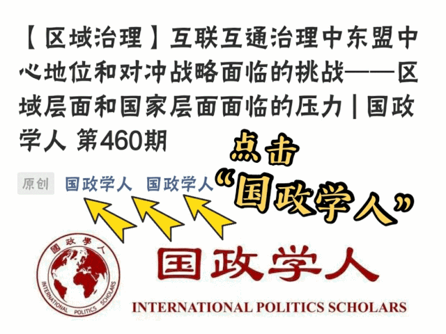

收录于合集

作品简介
【作者】 官逸尘, 哈佛大学中东研究硕士、政治学博士。Dustin Tingley, 哈佛大学政治学教授，主要研究方向为国际关系，国际政治经济学，统计方法和政治科学实验方法。David Romney, 哈佛大学博士生。Amaney Jamal, 普林斯顿大学政治学教授, 中东妇女研究协会前主席, 主要研究方向为阿拉伯世界政治行为的驱动因素，美国和欧洲的穆斯林移民，以及不平等和贫困对政治结果的影响。Robert Keohane, 著名学者，新自由主义制度奠基人，普林斯顿大学政治学教授。
【编译】 王泽尘
【校对】 扎西旺姆
【审核】 周玫琳
【排版】 李晓暖
【来源】 Yichen Guan, Dustin Tingley, David Romney, Amaney Jamal, Robert Keohane, Chinese views of the United States: Evidence from Weibo, International Relations of the Asia-Pacific, Volume 20, Issue 1, January 2020, Pages 1–30.
期刊简介
《亚太国际关系》(International Relations of the Asia- Pacific)，创办于2001年，每年1月、5月和9月出版三次。本刊目标主要有两方面: 一是为亚太地区的读者带来国际关系方面优秀的综合学术成果；二是为研究该地区国际关系的学者提供专门的途径。本刊近五年影响因子为1.222。
Chinese views of the United States: Evidence from Weibo
中国民众如何看待美国：
来自微博的证据
官逸尘
Dustin Tingley
David Romney
Amaney Jamal
Robert Keohane
推荐语
随着传统纸媒的“没落”，社交媒体在人们日常生活中的作用越来越突出。这种匿名的快速信息传递平台，在某种程度上是一种更有效的了解民众情绪的平台。来自哈佛大学的研究团队，利用微博数据解析了中国民众对于美国和国际形势的观点。
文章导读
01
开篇引言
通过分析“中国版推特”——微博的数据，本文主要聚焦于中国民众对美国的态度，并以对日本、俄罗斯和越南的态度作为对照。文章表明了中国民众对于美国正负交织的复杂心理。对于中国人来讲，西方既是典范也是威胁。一方面，美国的制度性基础设施（institutional in- frastructure）在过去30年一直深刻地影响着中国经济解放。在经济改革的过程中，中国接受了许多美国的价值观，如个人主义和物质主义。而另一方面，当今大多数中国人都对美国在亚太地区的外交政策持敌对态度，特别是当美国的外交政策与中国强烈的民族主义背道而驰之时。相反，对日本、俄罗斯和越南的态度各不相同。
在这篇文章中，研究团队通过观察中国人在社交媒体上表达的态度，对民众关于美国的看法进行解析。社交媒体已经在全球范围形成了另一种话语机制，本文正是利用了这种技术创新。
02
中国的舆论
到目前为止，关于中国民众对美国所持看法的研究主要依靠调查和民意测试。根据现有的关于中国人对西方所持态度的文献，对于中国的反美情绪主要有两种解释。首先，自1915年“百年国耻（century of humiliation）”一词出现以来，中国人习惯于通过这一历史记忆来理解美国的外交政策。随着中国政府在历史学和爱国主义教育中使用“百年国耻”一词，以及强调关注主权和领土完整，这些都进一步唤起了现代中国民族主义。对反美情绪的第二种解释认为，反美情绪的程度在宏观上反映了中国民众对美国在全球事务中的霸权地位和美国区域外交政策的负面看法。
调查结果现实中国人对美国的看法并不完全是负面的。一些积极的声音仍然存在，中国人的看法相当复杂。为了更清晰地总结现有的发现，本文提出有两个维度有助于区分中国人对美国的看法：1）社会内容与政治内容；2）美国在世界事务中的影响力与美国国内问题。
总的来说，根据调查数据，中国人对美国的态度因问题焦点的不同而变化。有关美国外交政策及其在世界事务之影响的观点往往是最负面的。但无论是有关社会领域还是美国国内政治，中国人都对美国的价值观、技术和文化都表现出强烈好感。
03
社交媒体话语 是了解中国对美观点的窗口
3.1 背景
然而，调查数据在全面反映民众态度方面的能力是有限的。首先，调查问题应如何设计？由于无法衡量情感强度，大多数受访者可能对某些话题感觉并不清晰。此外，由于调查费用昂贵，所以整体样本相对较少。相比之下，社交媒体上的帖子是持续不断的，是用户在事件发生时自发的表达。因此，虽然上述的中国民意调查有助于粗略地了解中国人对美国的看法，但也可以通过社交媒体数据获得更细致的分析。
互联网自1994年进入中国以来，已经成为中国公众参与社会和政治问题的一种越来越有吸引力的方式。更多的中国公民依靠社交媒体获取信息，对正在发生的事件发表意见，甚至参与政治，比如组织罢工和示威。因此，近来学者们越来越关注社交媒体作为中国人了解外国和国际关系的窗口作用。
中国的社交媒体已经成为了高涨的民族主义情绪的抒发平台。在中国，民族主义是“自上而下”，也是“自下而上”的。一方面，政府通过思想政治教育，媒体宣传，甚至是春节联欢晚会等娱乐活动来宣传爱国主义和民族主义。另一方面，民族主义的表达是人们对中国国家利益受到威胁的一种自发反应。网络上出现了大量主张中国对邻国和西方国家使用武力的讨论，这反映了公众的普遍观点。因此，尽管在一定程度上受到政府的引导和鼓励，但网络民族主义并不是政府设计或支配的东西，而是大众辩论自发的产物。
在这个公共领域，一些国家受到了中国网络社区的更多关注。美国由于在国际事务中的重要作用和文化影响力，自然受到了中国网民最密切的关注。反美情绪的表达很普遍，这或许并不奇怪。
虽然越来越多的研究机构开始使用微博数据来分析中国政治，并特别关注舆论管理机制，但在关于反美情绪的学术研究中，还没有以微博作为分析依据的研究。而使用了类似方法来理解反美主义的唯一一篇文章是基于推特作为其数据来源的。唯一一篇用微博话语来理解中国民族主义的文章是Obern（2013）关于中国对钓鱼岛争端抗议态度的优秀文章。通过观察线上和线下公众对钓鱼岛争端的态度，Obern认为，微博有助于形成一种不同于国家宣传的替代性民族主义，因为它涉及个人的批判性思维。
3.2 微博
自“微型博客（microblog）”诞生以来，它便成功改变了人们认知和处理网络信息的方式。以深度分析为支撑的详细新闻报道，现在被推特等微型博客网站上的短新闻帖子所补充。这种在网络社区与朋友和陌生人快速交流的方式，补充甚至颠覆了传统的交流模式。
2009年，新浪微博（下文简称“微博”）崛起为中国版推特。微博的特点是传播速度快、互动性强。微博的字数限制为140字，鼓励人们以一种高效、吸引人的方式传播故事。微博的影响力部分源于其庞大的用户数量，这已经引起了中国政府和社会科学家的关注。由于微博用户通常以受教育程度更高、更开放的群体为主，这些人更容易受到西方的影响，所以本文的研究结果可能并不代表底层民众对美国的看法。此外，态度更强硬的人更倾向于在社交媒体平台上发帖，而持中立观点和漠不关心的人则比较沉默。因此，尽管微博话语可能具有独特性，却并不一定能够代表大众公众的态度。而作为一种媒介，微博话语的重要性显然越来越大，尤其是对于那些对国外感兴趣的民众来说。微博在中国的中心地位，使它可能成为了解中国人对美国和政治更广泛看法的最佳在线渠道。此外作者观察到，由于对社交媒体平台的舆论管理以及国家可能的干预，微博话语既是用户自发表达的产物，也是政府使用社交媒体的产物。微博数据也许不能完美反映民意，但可以被视作一个近似值。
3.3 研究设计和方法
本文使用Crimson Hexagon公司（下文简称CH公司）收集存储的微博帖子来进行分析。值得注意的是，该公司并没有收集微博上的所有帖子。在进行这一分析期间，CH公司通过第三方获取了2012和2013两年的微博帖子样本，并将这些帖子中可能的垃圾邮件和机器人账户删除。通过过滤筛选，只有1%的帖子通过。尽管这些数据不是随机取样，但并没有对本研究造成偏见，因为本研究关注人类的参与，而非机器人程序生成的帖子。
本研究的分析过程如下。首先，通过设置基本参数和布尔（Boolean）搜索逻辑来定义关键词，这样软件就可以识别要分析的文章范围。其次，在每次分析中，定义适合研究参数的类别。由于本研究主要针对中国人如何看待美国政治和社会问题，作者定义了六个基本类别来考察其态度：积极政治型、中立政治型、消极政治型、积极社会型、中立社会型和消极社会型。此外，将不属于上述任何一类的帖子定义为“离题”类，对于不相关的帖子定义为“新闻”类，这样就减少对分析的影响。第三，创建了一个训练集——研究人员预先定义的一组帖子，作为监督文本分析的基础。研究团队手动将每条微博放到适当的类别中，直到拥有对分析而言足够的训练样本（总共300-500条微博）。
最后，当训练完成后，本研究运行了受Hopkins和King（2010）启发的算法，该算法估计了属于任何给定类别的帖子比例。这可以让读者了解有多少微博用户对美国持积极、中立或消极的看法。
04
中国人对美国及周边国家的一般态度
4.1 微博用户态度的总体程度
作者首先分析的是“总体的反美主义”，以此来研究微博用户对美国的看法。有 23,097,889个帖子被包含在六大类别中。结果非常引人侧目，在几个维度上，中国微博用户总体是喜欢美国的。研究发现中的最大类别是积极政治型帖子：关注政治问题的帖子，总体上对美国是积极的。区别于民意调查，这个结果令人感到意外。在频率上，第二大类别是中立政治型。这两个类别的帖子占帖子总数的90%以上。其他类别的帖子加起来只占不到6%，这意味着中国网民对与美国相关的政治问题有着惊人的积极看法，而非民调显示的负面情绪为主。此外，还有一个有趣的发现，即政治话语占帖子总数的近96%，这意味着中国人对美国政治的兴趣远远超过对美国社会的兴趣。
进一步分析可以发现，这个结果与民调仍有一些相似之处。大多数积极政治型的帖子都是关于美国国内政治的，中国网民表达了他们对美国政治制度和民主理念的钦佩，而消极政治型类别主要是关于美国在东太平洋地区的负面影响以及美国对中国内政的干涉。这一发现与调查数据的结果一致。此外，与民意调查结果一致的是，属于积极社会型类别的人表达了对美国生活、美国人民和美国文化的喜爱。
总而言之，微博数据比调查结果整体要积极得多，且中国民众对美国最负面的情绪在外交政策方面。这一结果还可以有效地反映态度的强度，这是传统调查无法捕捉到的。
4.2 对于邻国的总体态度
为了更全面地考虑微博用户对美态度，文章继续分析了中国对俄罗斯、日本和越南这三个邻国态度的数据。选择这三个国家是因为他们与中国复杂的关系。中俄有很多共同利益，经常协调政策；中日有着密切的文化联系，但有着一段不愉快的历史；中越有着共同的社会主义背景，但两国关系并不稳定。类似之前的做法，研究依然将帖子分为六个类别。与对美国的兴趣不同，结果显示中国民众对这些国家的政治和社会同样感兴趣。
对于俄罗斯，尽管在政治方面总体非常积极，微博中消极社会型帖子的数量是积极社会型帖子的近4倍。仔细阅读就会发现，尽管中国人钦佩弗拉基米尔•普京（Vladimir Putin）的雄心和决心，但他们认为俄罗斯人比中国人更粗鲁、更不文明。
中国民众对于日本的政治和社会兴趣相同，这是因为相同的文化根源为比较社会问题提供了良好的基础。此外，去过日本的中国人要比去过其他国家的人多得多，因此他们拥有更多的第一手经验，几乎一半的帖子都是正面评价日本社会和日本人民的。与此形成鲜明对比的是，在我们关于日本政治或日本外交政策帖子中，没有表现出积极的信号。
最后，在对越南的分析中，社会问题几乎是政治问题的两倍。很大程度是因为越南是中国最热门的旅游目的地之一。然而，负面的社会帖子的数量是正面的近4倍，中国民众普遍认为越南是一个贫穷落后的国家。由于中国微博用户高度评价越南正在进行的反腐运动和政治改革，正面政治帖子的数量要多于负面。
考虑到文化差异，地缘政治竞争，以及政治制度的巨大差异，微博用户对各国的不同态度是显而易见的。但有趣的是，对美态度总体来说是这些被分析国家中最积极的。
05
特定事件激发的反美情绪
在分析了对美国政治和社会的一般看法之后，这一节关注的是特定时间和特殊事件突然爆发后，中国人对美国的态度是否会发生变化。文章分析了中国和菲律宾之间的领土争端和朝鲜的核武器计划。
5.1 美国和中菲领土争议
中国与菲律宾的关系历来紧张，由于对南沙群岛一些岛屿和浅滩的主权存在争议，两国关系进一步受到影响。中国对这些事件的回应出现在微博上。数据显示在2012年关于菲律宾岛屿争端的微博帖子经历了两次高峰，一次始于4月初黄岩岛对峙事件，另一次始于7月底阿基诺发表措辞强硬的讲话。为此分析共收集了34,034个帖子，使用的关键词是“美国”和“黄岩岛”（斯卡伯勒浅滩）。和之前一样，研究把这些帖子分为几个类别:“积极政治型”、“中立政治型”、“消极政治型”、“批评中国政府”和“菲律宾躲在美国后面”。
在这场冲突中，中国人对美国持非常负面的看法。很多帖子（42%）都批评了美国的海外霸权以及在该地区的权力滥用。13%的帖子持中立态度，另有6%的帖子表达了对美国实力的钦佩，认为美国在该地区的存在反映了其决心。有趣的是，33%的帖子批评中国政府对争议的反应过于软弱，因而无法保护自己的利益。
而在2016年南海仲裁案裁决之后，作者又立刻分析了微博数据。结果不出所料，大多数帖子（62%）表达了对该裁决的负面情绪。这类帖子批评了海洋法裁决的不公正和荒谬。然而，第二大类别更令人惊讶，它不是关于菲律宾或其他邻国如何挑战中国对南海的控制，而是关于对中国民族主义的反思。14%的帖子反映了民众认为同胞对此事的过度反应。第三大是关于美国的（11%）。人们认为美国是这一裁决的幕后黑手，因此指责美国政府干涉他国事务。最后，5%的帖子表达了对菲律宾的负面态度，2%的帖子要求中国政府保持强硬，不要示弱。其余的帖子都是中性的帖子和新闻。
总而言之，美国的地区干涉主义并不受欢迎。在这一件事件分析中，突出了两种批评。首先中国人认为美国在该地区的存在不仅是对中国领土安全的严重挑战，也是对中国对周边国家权威的严重挑战。这些帖子经常使用“双重标准”、“世界警察”、“霸权国家”等词语来表达对美国干预该地区的担忧和愤怒。第二类批评主要是批评美国只追求自身利益，自私地对待“所谓”盟友。
5.2 美国和朝鲜核问题
在这一事件中，研究分析了中国在朝鲜核武器计划背景下对美国的态度，通过收集的54,701个相关帖子。与在领土争端中对美国的态度相比，中国网民在朝核危机中的看法要中立得多。许多人倾向于认为，美国在该地区的存在可能只是有助于和平谈判的另一种力量。更有趣的是，除了中立的观点之外，更多的人认为美国在这次事件中起到了积极的作用。由于朝鲜被视为对该地区的威胁，美国的参与实际上是值得赞赏的。最后，与我们之前观察到的类似，大量微博用户对中国政府对此事的反应进行了反思，并对其未来的行动提出了建议和建议。
总而言之，作者的研究结果表明，虽然中国人对美国总体上持积极态度，但当中国网民认为美国威胁中国利益时，比如在南海，反美情绪就变得强烈起来。但这并不意味着民众将负面地看待美国在该地区的任何参与。
06
总结
不同于先前依赖于民调的定量研究，本文将目光锁定在社交媒体。综合来看，中国民众对美国的态度呈现了出人意料的积极。这种友好感主要来自对美国国内政治而非社会规范的看法，更不适用于美国的对外政策。
此外，这一研究方法可以帮助人们更好的了解民众对于特定突发事件的看法。这些发现说明，中国对美国的看法不是静态地基于意识形态差异，而是随着具体事件和国际环境与国家利益的相关性和威胁性而变化的。因此，中国网民的信息接收决定了他们对外部的评估，也塑造了他们的情绪。这种不稳定也解释了为什么政府要密切管控和筛选发布的信息。这项研究反映了中国网民在其政府影响下对国际互动的看法。
译者评述
本文主要聚焦于2012和2013年的微博数据，时至今日，社交媒体在政治领域的运用已越来越广泛。一方面，不仅是接收信息，社交媒体也是观点传播和加强认同的理想平台。例如英国脱欧和美国大选，社交媒体数据都被候选人充分利用，成为他们胜利道路上重要的基石。而另一方面，根据2020年中国官方发布的数据，中国网民规模已超过9亿。与本文研究的时期相比，网络在中国的普及程度大大提高，包含的人口比例更高，社会群体也更加丰富。尽管不能否认存在政府有意引导和管控舆论，但有理由相信，若此时再次开展这一研究题目，得到的数据会更具统计学意义和研究价值。正如本文关注的中美关系，随着当前中美关系来到一个非常重要的时刻，围绕社交媒体的公众观点研究会具有非常重要的意义。
依托网络信息技术的发展，基于社交媒体大数据的研究方法在学术领域的应用愈发广泛。如本文所提到的，相比于传统民意调查在时效性和成本等方面的缺陷，通过大数据算法收集到的社交平台数据可以在一定程度上突破这些限制。但是由于政府监管制度的存在，如屏蔽关键字、网络实名制和网络删帖等手段，会对分析结果造成一定影响。因此，降低或避免这一影响因素是此类研究方法需要注意的问题。
回归文章，本文更像是一个关于中国网络民意的分析报告，结果让研究团队多少有些意外。通过对比传统民调和对于其他邻国的态度，中国民众整体上对美国表现出友好。而通过与突发事件进行对比，这种动态化的研究可以凸显民众情绪的变化，进而使分析更加深入。近年来，全球范围内民族主义发展的速度惊人。伴随着疫情等问题，我国和部分国家的关系愈发紧张。而此时的社交媒体在民众与政府之间扮演着非常微妙的角色。一方面，这是政府了解民众观点非常有效的渠道。另一方面，政府也可以巧妙地使用社交媒体来引导民意。因此，不管是学术意义还是实际意义，社交媒体与公众观点的关系都会吸引学术研究越来越多的关注。
文章观点不代表本平台观点，本平台评译分享的文章均出于专业学习之用, 不以任何盈利为目的，内容主要呈现对原文的介绍，原文内容请通过各高校购买的数据库自行下载
**
**
**
**
**
**
添加 “国小政”微信
获取最新资讯



国政学人
支持学术公益与知识传播
微信扫一扫赞赏作者 __赞赏
已喜欢，对作者说句悄悄话
取消 __
发送给作者
发送
最多40字，当前共字
上一页 1/3 下一页
长按二维码向我转账
支持学术公益与知识传播
受苹果公司新规定影响，微信 iOS 版的赞赏功能被关闭，可通过二维码转账支持公众号。